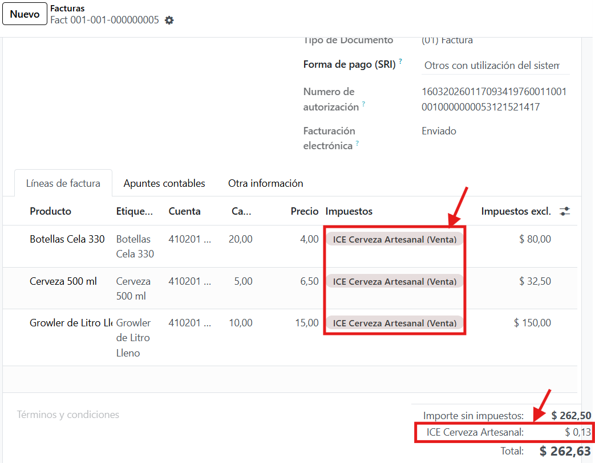
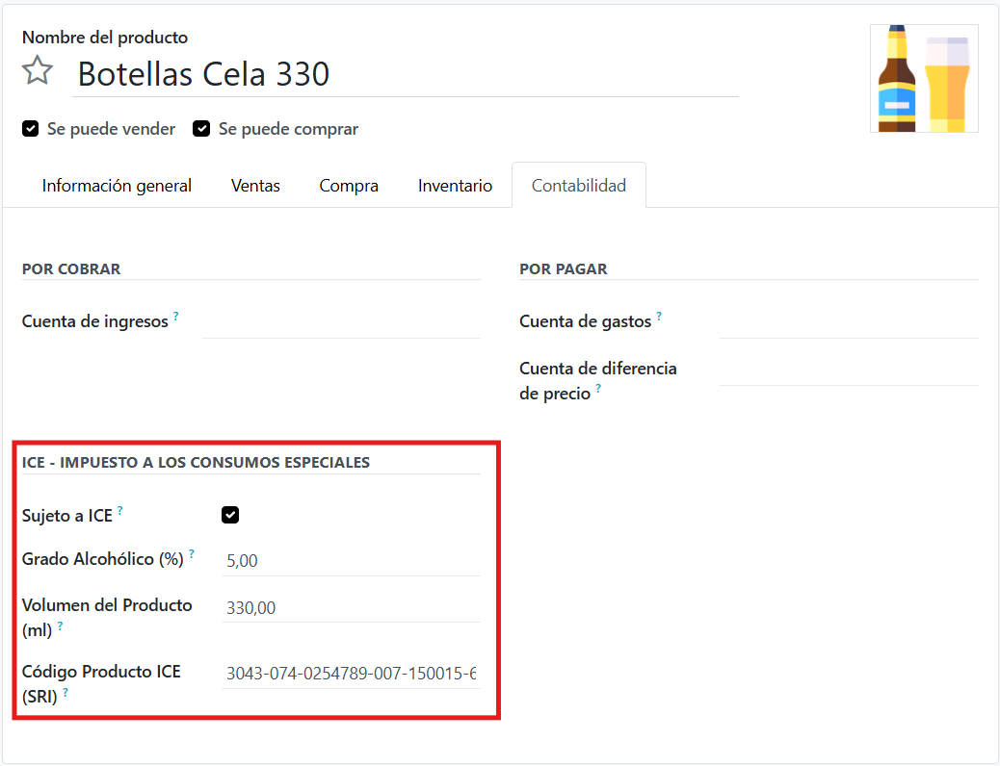
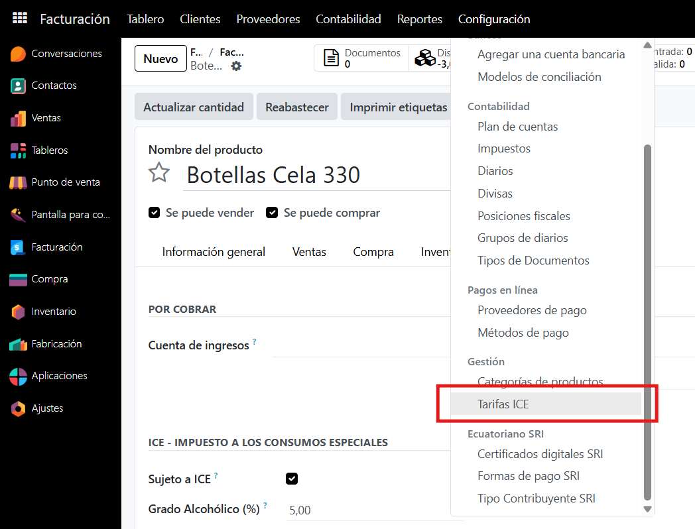
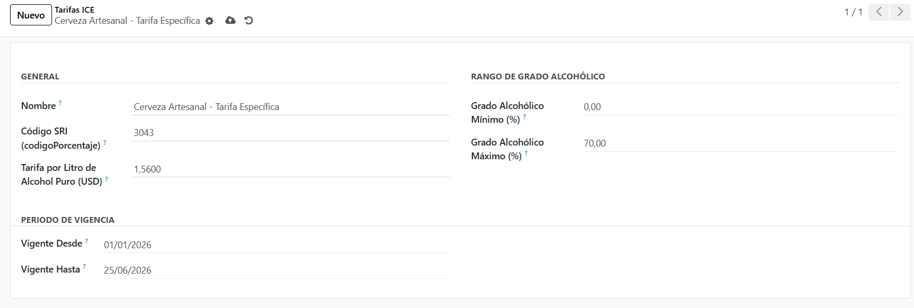
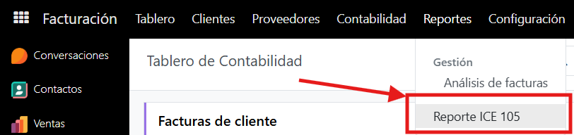
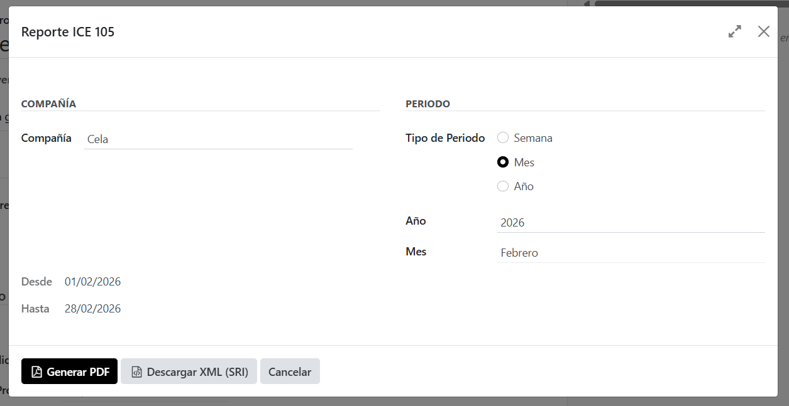
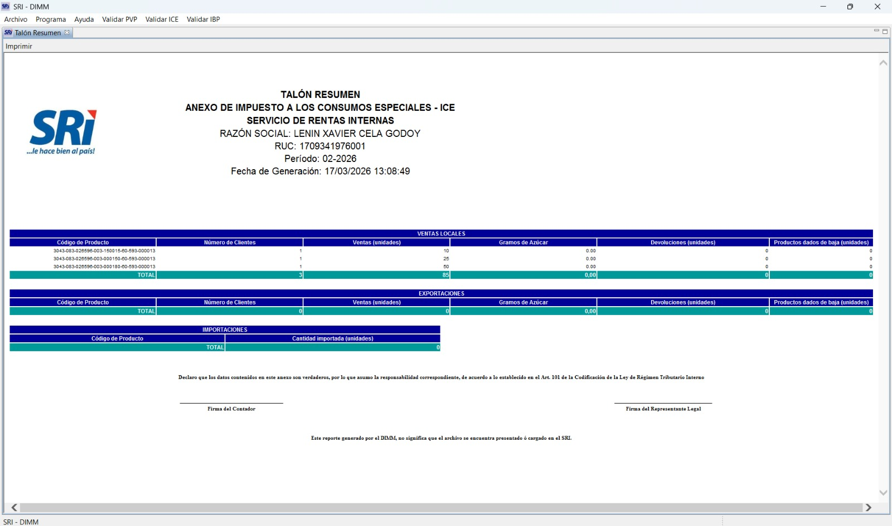

PDF Report Output
Download a detailed PDF report for internal records and audits.

This module provides a complete solution for managing the ICE tax (Impuesto a los Consumos Especiales) for artisanal breweries operating in Ecuador. It integrates seamlessly with Odoo's Ecuador localization and handles automatic tax computation, SRI electronic invoicing (EDI), and the official SRI Form 105 (Anexo 105) report for regulatory compliance.
ICE tax is automatically computed and displayed on customer invoices.

Computes ICE based on the official formula: liters of pure alcohol x rate per liter. Uses alcohol degree, product volume, and configurable rate tiers. Results are rounded to 2 decimals.
Generate the official Anexo 105 report required by Ecuador's SRI. Export as PDF for internal records or as XML ready to upload to the DIMM platform.
Full integration with Ecuador's electronic invoicing system. ICE taxes appear correctly in EDI XML documents sent to the SRI with the proper tax codes (codigo=3, codigoPorcentaje=3023).
Manage ICE rate tiers with date ranges and alcohol degree thresholds. Easily update rates when SRI regulations change without modifying code.
Set up your beer products with alcohol degree, volume, and the official SRI product code.

| # | Step | Description |
|---|---|---|
| 1 | Configure Products | Mark your beer products as "ICE Applicable" and enter alcohol degree (%) and volume (ml). |
| 2 | Set ICE Rates | Configure ICE rate tiers under Accounting > Configuration > ICE Rates. Set the rate per liter of pure alcohol. |
| 3 | Create Invoices | When you create a customer invoice with ICE-applicable products, the ICE tax is computed automatically and added to the invoice. |
| 4 | Send to SRI | Electronic invoices include ICE tax data in the correct XML format for SRI validation. |
| 5 | Generate Form 105 | Go to Accounting > Reports > ICE Report 105. Select the period, then download as PDF or XML for DIMM upload. |
Navigate to Accounting > Configuration > ICE Rates to manage tax rate tiers.

Configure rates per liter of pure alcohol, with date ranges and alcohol degree thresholds.

ICE = (Volume in ml / 1000) x (Alcohol Degree / 100) x Quantity x Rate per Liter of Pure Alcohol
Example: A 330ml beer at 5% ABV, quantity 100 units, rate $10/liter:
ICE = (330/1000) x (5/100) x 100 x 10 = $16.50
Access the report from Accounting > Reports > ICE Report 105.

Select the reporting period and generate the report as PDF or XML.

Download a detailed PDF report for internal records and audits.
The XML export follows the official SRI XSD schema for the ICE Anexo 105. The generated file is ready to upload directly to the DIMM application. It includes:
The generated XML file is validated and accepted by the SRI DIMM platform.

l10n_ec)l10n_ec_edi (Enterprise) is installed, ICE taxes integrate automatically with SRI electronic invoicingFor technical support, bug reports, or feature requests, please contact us at soporte@bistro-pay.com. We are committed to resolving any issues in a timely fashion.